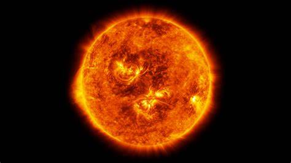
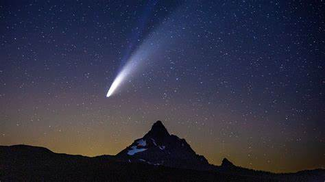
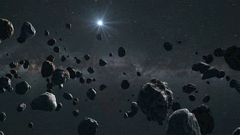

CELESTIAL BODIES
An astronomical object, also known as a celestial or stellar object, is a naturally occurring entity, association, or structure that exists within the observable universe. In astronomy, "object" and "body" are often used interchangeably. However, a celestial body specifically refers to a single, compact, and cohesive entity, while an astronomical object may describe a more complex structure, potentially made up of multiple bodies or substructures.
Examples of astronomical objects include planetary systems, star clusters, nebulae, and galaxies. Celestial bodies, on the other hand, include entities like asteroids, moons, planets, and stars. A comet can be classified as both a body and an object: it is a body when referring to its frozen nucleus of ice and dust, and an object when considering the entire structure, including its coma and tail.
SUN
The Sun is a 4.5-billion-year-old yellow dwarf star, a hot, glowing sphere composed primarily of hydrogen and helium, located at the center of our solar system. It lies approximately 93 million miles (150 million kilometers) from Earth and is the sole star in our solar system.
COMETS
Comets are icy bodies composed of frozen gases, rock, and dust that orbit the Sun. When in their frozen state, they can be as large as a small town. As a comet approaches the Sun in its orbit, it warms up and releases dust and gases, forming a large, glowing head that can be bigger than many planets
ASTEROIDS
Asteroids are small celestial objects that orbit the Sun. They primarily consist of rock and metallic materials and are typically irregularly shaped, resembling thin rocks made of minerals or metals. Most asteroids can be found in the asteroid belt, a region situated between Mars and Jupiter. Generally, asteroids are composed mainly of rock and dust, with some containing ice as well.
